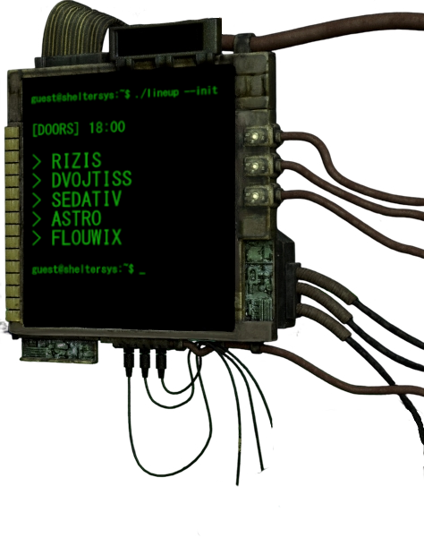

Vybrané práce: produktová postprodukce, srovnání před a po úpravě, e-commerce vizuály a komplexní montáže.


Obuv — Izolace z reálného prostředí na čisté pozadí
Ukázka kompletní transformace ze surového snímku na krabici (viz první malý náhled) na čistý, detailní produktový vizuál. Manuální maskování složitých hran, ořezová cesta šněrování a podrážky, odstranění rušivých odlesků, vytažení textury kůže a syntetické stínování pro e-shopové použití.


Katalogová příprava oděvů a Flat Lay kompozice
Hromadné zpracování produktových fotografií textilu. Důraz na přesnost okrajů u roztřepeného denimu a pleteniny, barevnou věrnost materiálů a sjednocení podkladů s radiálním vinětováním. Správa kontrastu, čištění prachu a optimalizace velikosti souborů pro rychlé načítání e-shopu bez ztráty detailů.


spimzdrave.eu — Slider bannery, USP lišta a prodejní letáky
Kompletní návrh marketingových výstupů pro e-shop se zdravotními matracemi. Tvorba homepage slideru s důrazem na vizuální hierarchii (hlavní sdělení, lišta výhod s ikonami: doprava, výroba, doporučení lékařů). Zpracování produktových řezů materiálů a návazných tištěných letáků pro ofsetový tisk v CMYK se spadavkou.



Promo kampaň — Propojení rastrové grafiky a textur
Ukázka pokročilé práce s vrstvami, maskami a barevným gradingem v kombinaci s digitální kresbou (Krita). Precizní izolace složitých objektů (kabeláž, ostnatý drát), sjednocení světelné atmosféry a typografická úprava pro digitální promo i plakátový formát.
Hledáte další ukázky specifických produktů nebo formátů? Napište mi pro kompletní podklady.